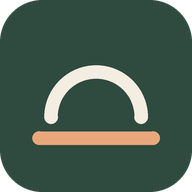

You're offline
Open Clear Days once while online so it can save itself to this device. After that it works without a connection.

Open Clear Days once while online so it can save itself to this device. After that it works without a connection.